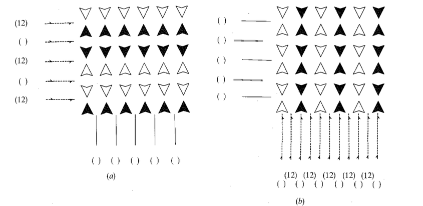

Catalogue D — the coloured 2D crystals
The 269 ways of colouring a wallpaper pattern in at most six colours so that every symmetry respects the colouring — classified, rendered, and tied to the clockwork crystals.
1. The definition
Every catalogue in this suite instantiates one recipe — fix an ambient group of allowed symmetries and an equivalence relation, then count the discrete subgroups whose translations form a full-rank lattice. Xu–Wu's Eq. (4) writes the spacetime instance of the recipe: operations
Γ(r, t) = (Rr + u, st + τ),
a spatial isometry paired with an action on an internal coordinate — there, the clock. A coloured crystal replaces the clock by the simplest internal state imaginable: a label from a finite set of k colours, acted on by permutations. The ambient group becomes E(2) × Sk, with elements
(x, c) ⟼ (Rx + u, σ(c)), R ∈ O(2), σ ∈ Sk,
and a coloured 2D crystal is a discrete subgroup G ≤ E(2) × Sk such that (i) the projection to E(2) is injective — each isometry appears with exactly one colour permutation — and its image Γ is a wallpaper group, and (ii) the action on the k colours is transitive — otherwise fewer colours would do. Two coloured crystals are the same when conjugate by an affine map of the plane combined with a relabelling of the colours. This is precisely the classical notion of a k-colour group: van der Waerden and Burckhardt (1961) first phrased colour symmetry this way, and the enumerations of Jarratt–Schwarzenberger (1980) and Wieting (1982) count exactly these objects.
A coloured crystal is a pair Γ > H: a wallpaper group Γ together with a subgroup H of index k — the stabiliser of one colour. The colours are the k cosets of H; the symmetry g sends the colour gʹH to the colour g·gʹH. Two pairs are equivalent when a single affine transformation carries one group onto the other and one subgroup onto the other. Every subgroup of finite index in a wallpaper group is itself a wallpaper group, so H has one of the 17 types — the catalogue names each entry "Γ / H" accordingly.
In the language of Chapter 8 of Grünbaum and Shephard's Tilings and Patterns: colour the copies of a motif with χ, call a pair (s, θ) of a symmetry and a colour permutation a colour symmetry when θ(χ(Mi)) = χ(s(Mi)) for every copy Mi, and call the colouring perfect when every symmetry of the uncoloured pattern is associated with some colour symmetry. For a primitive pattern (trivial motif stabiliser — the comma motifs drawn here), transitive colourings are automatically perfect, and the colour symmetry group C(𝒫̂) is exactly a coloured crystal in the sense above: the compatible permutation θ is determined by s, so C(𝒫̂) is the graph of a homomorphism Γ → Sk with transitive image, H its point stabiliser. G&S's classification of colour symmetry groups "up to affine transformation and permutation of colours" (their §8.2) is the same equivalence again.
2. The census
The counts below — Wieting's, reproduced as Table 8.2.1 of Grünbaum & Shephard and as Jarratt–Schwarzenberger's Table 5, and confirmed to k ≤ 60 by OEIS A307293 — were recomputed from scratch for this catalogue (enumerate/enumerate_colored.py: subgroups of index k ≤ 6 of each of the 17 groups in exact rational arithmetic, then orbits under the affine normaliser; all 85 cells agree). One colour is no colouring, so the row k = 1 is catalogue A itself.
| k | p1 | p2 | pm | pg | cm | pmm | pmg | pgg | cmm | p4 | p4m | p4g | p3 | p3m1 | p31m | p6 | p6m | Σ |
|---|---|---|---|---|---|---|---|---|---|---|---|---|---|---|---|---|---|---|
| 2 | 1 | 2 | 5 | 2 | 3 | 5 | 5 | 2 | 5 | 2 | 5 | 3 | — | 1 | 1 | 1 | 3 | 46 |
| 3 | 1 | 1 | 2 | 2 | 2 | 1 | 2 | 1 | 1 | — | — | — | 2 | 2 | 2 | 2 | 2 | 23 |
| 4 | 2 | 3 | 10 | 4 | 7 | 13 | 11 | 4 | 11 | 5 | 13 | 7 | 1 | 1 | 1 | 1 | 2 | 96 |
| 5 | 1 | 1 | 2 | 2 | 2 | 1 | 2 | 1 | 1 | 1 | — | — | — | — | — | — | — | 14 |
| 6 | 1 | 2 | 11 | 5 | 7 | 9 | 11 | 4 | 8 | 2 | 2 | 2 | 1 | 4 | 5 | 5 | 11 | 90 |
| 2–6 | 6 | 9 | 30 | 15 | 21 | 29 | 31 | 12 | 26 | 10 | 20 | 12 | 4 | 8 | 9 | 9 | 18 | 269 |
Why stop at six? Six colours already exhaust every order a crystallographic clock can have (1, 2, 3, 4, 6 — see §4) together with the first order a clock cannot have (five), and six is where Grünbaum & Shephard's chapter and the classical Russian-school tables stop drawing. Nothing else is special about it: the counts continue 15, 166, 40, 75, 13, 219, … for k = 7, …, 12, and the enumeration script runs to any k. The frieze analogue for completeness: 17, 7, 19, 7, 17 strip colour groups for k = 2, …, 6 (G&S Table 8.2.1; the pattern 7/17/19 depends only on k mod 4).
3. The orbifold view
Conway's orbifold notation is the right bookkeeping here, for one structural reason: a subgroup H of index k in Γ is the same thing as a degree-k orbifold covering of Γ's orbifold by H's orbifold. Every wallpaper orbifold has orbifold Euler characteristic zero — that is why finite-index subgroups of wallpaper groups are again wallpaper groups — so the covering constraint χ(OH) = k·χ(OΓ) is vacuous, and which coverings exist is a genuinely combinatorial question, the one this catalogue answers. An entry such as *632 / 333 (k = 6) says: the orbifold 333 covers *632 six-fold; equivalently, colour the p6m pattern in six colours so that the colour-preserving symmetries form a p3.
Around any feature of Γ's orbifold, the colouring behaves in one of a few readable ways: a rotation centre of order n permutes the k colours in cycles whose common length divides n; a mirror either preserves each colour on its line or transposes colours across it; and The Symmetries of Things decorates the orbifold symbol with superscripts recording exactly these local permutation orders — the same superscripts this site already uses for clockwork groups, where the "permutation" is the advance of a clock. The catalogue tags every entry with its global colour-permutation action too: the image of Γ in Sk, which for k ≤ 6 ranges over Ck, dihedral groups, S3, A4, S4, the Frobenius group F20, S3≀C2 and a few others — see the filter bar.
4. Colour groups are not coloured patterns
A colour group is an abstract object — a group of (isometry, permutation) pairs. A coloured pattern is a picture. The passage from picture to group forgets information, and Grünbaum & Shephard's Figure 8.3.2 is the canonical witness:

Both colourings of that figure have the same colour symmetry group (pmm[2]₄ in G&S's symbols, the pair *2222 / 22* here) and even the same induced group on a motif; they are distinguished only by the set of motif-transitive subgroups of the colour symmetry group. G&S therefore refine colour groups to colour pattern types, and that finer classification is a different, larger catalogue: 88 periodic 2-colour pattern types against our 46 two-colour groups, 59 against our 23 for three colours — and for k ≥ 4 the number of colour pattern types is unknown. The refinement gets its own page: catalogue E. The present catalogue is the coarser, group-level classification — exactly the level at which the crystallographic definition of §1 speaks.
5. Colourings with a clock: the correspondence with catalogue C
Read Eq. (4) next to the definition of §1 once more. A clockwork crystal is a wallpaper group in which every symmetry advances a clock by a fixed fraction of the period: the internal state is a phase in ℤ/k, and each symmetry adds a constant to it. That is precisely a coloured crystal whose colour permutations are cyclic shifts: colour = phase, one colour per k-th of the period. Formally, the clockwork groups over Γ with clock order k correspond to homomorphisms Γ → ℤ/k — colourings in which H is normal with cyclic quotient. The catalogue tags these entries cyclic; of the 269, 84 are cyclic (46 + 8 + 13 + 4 + 13 for k = 2, …, 6).
But the two equivalence relations differ, and the difference is a theorem-sized subtlety. Spacetime equivalence allows Galilean boosts and re-basings of the spacetime lattice; colour equivalence allows neither — a colour is not a coordinate that can be sheared into space. The effect runs in one direction only: distinct cyclic colourings can lift to the same spacetime group. A colouring in which the colour advances along a translation (say, p1 coloured in k stripes) lifts to a spacetime lattice that a boost straightens back into wallpaper × clock: as a spacetime crystal it is trivial — "drift is never new symmetry" — and the colouring leaves no clockwork trace. Concretely: of the 80 cyclic colourings with k ∈ {2, 3, 4, 6}, exactly 47 are realised by the 51 nontrivial clockwork groups (four pairs of enantiomorphic clocks, such as 3₁3₁3₁ / 3₂3₂3₂, share a colouring — running the clock backwards recolours nothing), and the remaining 33 are boostable: their colour rides on a translation. The four cyclic 5-colourings have no clockwork twin for a different reason — no crystallographic clock has order five. Every entry below links to its clockwork realisations, or says which of the two obstructions applies.
The Russian school reached this correspondence from the other side. Belov and Tarkhova (1956) drew coloured mosaics by stacking copies of a plane pattern at k equal heights and projecting — colour as a code for height, height as our clock phase — and found fifteen multicolour (k ≥ 3) mosaics. Grünbaum & Shephard note that four pairs among the fifteen differ by "mere reversal of the colour sequence", and Lockwood & Macmillan (1978) insist "in fact there are only eleven polychromatic types that allow rotations". The computation adjudicates all of this at once: the multicolour clockwork groups of catalogue C number exactly 15, they carry exactly 11 distinct colour groups, and the four coincidences are exactly the four enantiomorphic clock pairs (3₁3₁3₁/3₂3₂3₂, 6₁3₂2₀-type pairs, …) — a clock and its reversal stack the same colours in opposite order. Belov counted mosaics-with-sequence (clockwork groups); Lockwood & Macmillan counted colourings (our entries); both were right. What limits the stacking construction as a census of colour groups is the cyclic-only definition: for k = 3 already, 15 of the 23 colour groups have symmetric rather than cyclic action (S3: some mirror transposes two colours) and cannot be drawn by stacking at all.
6. Chirality, and the analogue of 230 versus 219
Catalogues A and B use proper affine equivalence: in 3D this is what splits the 11 enantiomorphic pairs (P4₁22 ≠ P4₃22) and raises 219 classes to the familiar 230. The classical colour-group census counts with reflections allowed. Re-running our enumeration with only orientation-preserving equivalences finds that exactly one of the 269 is chiral: the five-colouring of p4 (442 / 442, k = 5), whose colour-period lattice is the ideal (2 + i) of the Gaussian integers; its mirror image is the (2 − i)-colouring, and no proper affine map carries one to the other. Under proper equivalence the catalogue would have 270 entries. (A colouring of a group that contains any reflection or glide is automatically achiral: the group's own improper elements mirror the pattern onto itself, recoloured.) The count of five: p4 is the one wallpaper group with an index-5 subgroup census driven by ℤ[i], where 5 splits; five colours are impossible over the hexagonal groups since 5 is inert in ℤ[ω].
7. Notes on the literature
Two-colour ("counterchange") symmetry was enumerated first by the textile physicist H. J. Woods (1936): all 46 two-colour wallpaper types, drawn as patterns, two decades before crystallography caught up — see Crowe (1986) for the history. The Shubnikov school reached the same 46 through antisymmetry (Shubnikov 1951; Belov, Neronova & Smirnova 1957), read black/white as a two-sided plane, and counted 80 = 46 + 2·17 periodic groups of the two-sided plane (Weber, Heesch, Alexander & Herrmann, 1929–30) — on this site the two-sided plane reappears with "colour swap" read as "play the film backwards", the magnetic operations of the main catalog. The modern pair definition is van der Waerden & Burckhardt (1961); Senechal (1979) settled the prime orders (for p > 3 there are 16, 15, 14, 13 colour groups as p ≡ 1, 7, 5, 11 mod 12 — check the table: 14 at k = 5); Jarratt & Schwarzenberger (1980) published the first full table to k = 15 (with three later-corrected slips at k = 8, 12, 14, none below 7); Wieting (1982) enumerated to k = 60 twice over by independent methods, and his numbers are the accepted census. Grünbaum & Shephard's Chapter 8 (1987) reprints the table, draws every 2- and 3-colour group (Figures 8.2.2–8.2.3 — catalogue E indexes those plates), and then argues, with Figure 8.3.2 as star witness, that groups undercount pictures. Schwarzenberger's survey Colour symmetry (1984) reconciles all of the above.
8. The catalogue
Grouped by number of colours, then by wallpaper group in the site's standard order. Each plate is a static rendering: one motif per group element, coloured by coset — the same construction as the wallpaper atlas, with colour standing where the clock stood.
Each entry is named by its colour type in the notation of Conway, Burgiel and Goodman-Strauss: the orbifold of the whole group, the number of colours as a superscript, and the orbifold of the colour-fixing kernel — 3*3⁶/333, 2222/◦. Twofold is understood, so two-colourings print no exponent. This is the notation the clockwork/colouring correspondence uses, and over the 51 entries here that have a clockwork twin it agrees with the published colour type in every case.
The colour type is not a complete invariant — colourings can share one — so each entry also carries the finer names below the plate: the Grünbaum–Shephard symbol for k = 2, 3 (pm[2]₃, …), the Shubnikov-style primed symbol for two colours, this catalogue's systematic id where no published scheme exists (c4-pm-7 = 7th four-colouring over pm), and the stabiliser H, which differs from the kernel exactly when the colour action is not regular.
References
B. Grünbaum, G. C. Shephard, Tilings and Patterns, Freeman, 1987 — Chapter 8, Colored patterns and tilings; Table 8.2.1, Figures 8.2.2, 8.2.3, 8.3.2.
T. W. Wieting, The Mathematical Theory of Chromatic Plane Ornaments, Marcel Dekker, 1982.
J. D. Jarratt, R. L. E. Schwarzenberger, Coloured plane groups, Acta Cryst. A36 (1980) 884–888.
R. L. E. Schwarzenberger, Colour symmetry, Bull. London Math. Soc. 16 (1984) 209–240.
M. Senechal, Color groups, Discrete Appl. Math. 1 (1979) 51–73.
B. L. van der Waerden, J. J. Burckhardt, Farbgruppen, Z. Kristallogr. 115 (1961) 231–234.
H. J. Woods, The geometrical basis of pattern design IV: counterchange symmetry in plane patterns, J. Textile Inst. 27 (1936) T305–T320.
D. W. Crowe, The mosaic patterns of H. J. Woods, Comput. Math. Applic. 12B (1986) 407–411.
N. V. Belov, T. N. Tarkhova, Colour symmetry groups, Kristallografiya 1 (1956) 4–13.
S. Xu, C. Wu, Space-Time Crystal and Space-Time Group, PRL 120, 096401 (2018). arXiv:1703.03388
OEIS A307293, number of colour plane groups of index n.